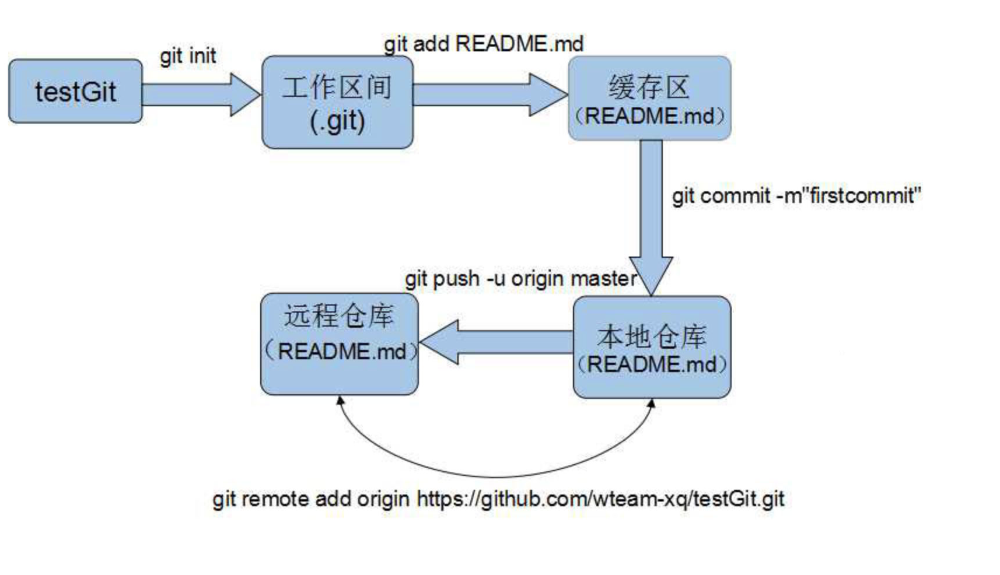
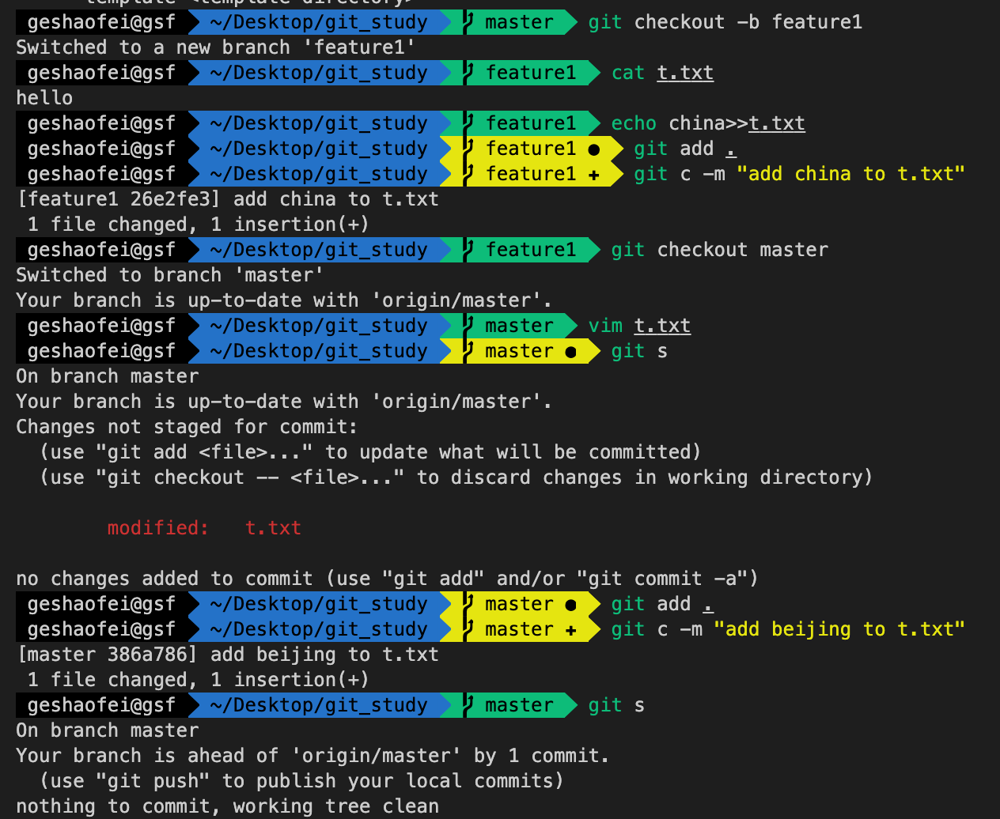
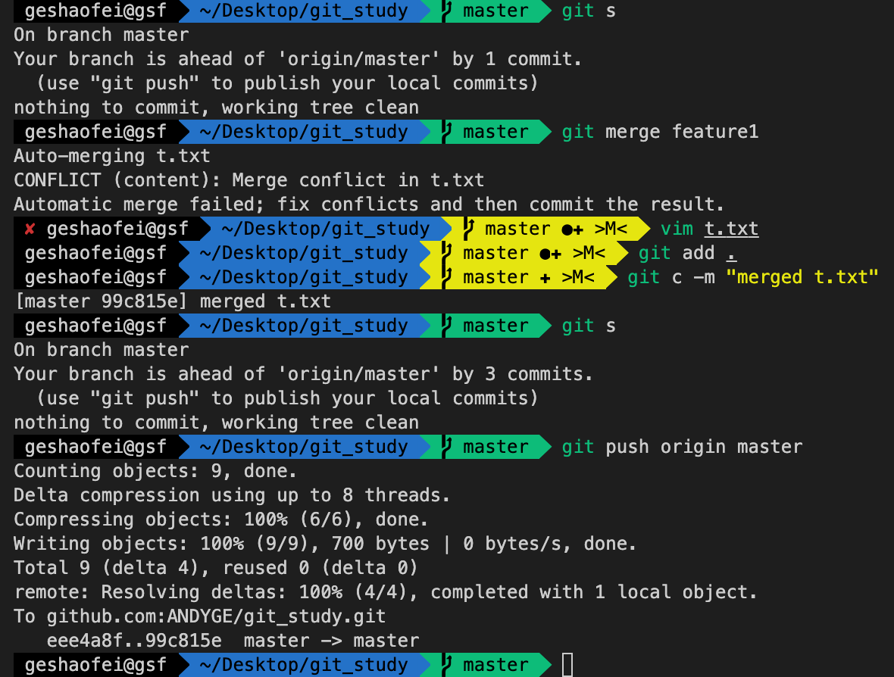

rest client插件
使用步骤：
1.vscode 安装 restclient 扩展
2.创建 .http 或 .rest 文件 ，编写相应内容
同一个文件内 可以通过 ### 分割多个请求
可以通过 @hostname = api.example.com 来定义变量，
以及 在 GET 时 来进行使用变量
1 | @hostname = api.example.com |
3.点击 send request，查看具体响应
4.响应结果可以另存
使用CocoaPod出现-bash: pod: command not found 解决办法
升级系统为 EI Captian 后，使用 CocoaPod 出现-bash: pod: command not found 解决办法
今天在使用 CocoaPod 为项目添加第三方类库时，出现了-bash: pod: command not found 的问题。没办法啦，网上各种找啊，找啊！按照网上说的方法使用命令：sudo gem install -n /usr/local/bin cocoapods。看到了让你高兴的系统提示：

本以为这样把问题解决了，赶紧用 pod –version 试试看。结果让人大失所望。-bash: pod: command not found 这句话再次无情地出现了。
What happen？别人都说可以，怎么我的不行？程序猿就是这样，问题没解决就只能在百度，Google（强烈建议使用 Google）各种帖子里钻啊。终于让我在找到了解决方法：GitHub 地址。想不到，国外也很多人都遇到了这个问题。不过里面都很多人都说，使用
sudo gem install -n /usr/local/bin cocoapods。
可以解决。但自己也使用了，的确没有解决啊。我再往下看，看到有个人是这样解答的：

终于找到有个人遇到了跟我一样的问题。然后我就按照他说的步骤去处理：
大概的意思就是说，
第一步：删掉你已安装了的所有版本的 Cocoapods；
第二步：修改 usr/local/bin/的系统权限。（_一定得加上这一句：sudo chmod +rx /usr/local/bin_）
sudo gem uninstall cocoapods
Select gem to uninstall:
cocoapods-0.36.0
cocoapods-0.38.2
cocoapods-0.39.0
All versions
4
Remove executables:
pod, sandbox-pod
in addition to the gem? [Yn]Y
sudo gem install -n /usr/local/bin cocoapods //等到下载安装完成
sudo chmod +rx /usr/local/bin
按了回车。赶紧输入:
pod –version
0.39.0
Bingo！完美解决！又可以通过 pod search 搜索到很多的库咯！
回头想想：其实很网上多帖子都说使用 sudo gem install -n /usr/local/bin cocoapods。就可以解决这个问题。但都漏了重要的一句 sudo chmod +rx /usr/local/bin。各位如果也遇到了“升级系统为 EI Captian 后，使用 CocoaPod 出现-bash: pod: command not found ”的问题，倘若不想移除一遍已安装的 CocoaPods。可直接跳过移除这一步骤。直接使用
sudo gem install -n /usr/local/bin cocoapods /
sudo chmod +rx /usr/local/bin
Dockerfile与docker-compose部署项目
1. 笔记
1.1. 利用 Dockerfile 把项目做成镜像
- 首先 vi Dockerfile
- 里面写的类容如下:
1 | FROM openjdk:8-jre |
- 构建镜像
1 | docker build -t owl . |
1.2. 使用 docker-compose 启动镜像
- 首先 vi docker-compose.yml
- 里面类容如下:
1 | version: '3.1' |
- 运行 docker-compose
1 | docker-compose up |
1.3. 导出 docker 镜像到文件
1 | docker save -o owl.dc owl |
1.4. 拷贝到远程服务器
1 | scp owl.dc root@server:/root/dockers |
1.5. docker 加载运行
1 | # 登录远程服务器并切换目录 |
安装yarn修改npm源以及yarn源
1.安装 yarn
前提是安装好了 node 环境，如果未安装请先部署 node 环境；
1 | sudo npm install -g yarn #安装yarn（终端执行） |
2.安装 nrm 和 yrm
nrm 是一个 NPM 源管理器，允许你快速地在如下 NPM 源间切换；
1 | npm install -g nrm #全局安装nrm |
yrm 是一个 yarn 源管理器，允许你快速地在 yarn 源间切换；
1 | npm install -g yrm #全局安装yrm |
3.使用 nrm | yrm 管理切换源
列出可选的源：
1 | yrm ls #nrm修改yrm为nrm即可 |
带 * 的是当前使用的源
切换：
1 | yrm use taobao #nrm修改yrm为nrm即可 |
测试所有源的响应时间：
1 | yrm test #nrm修改yrn为nrm即可 |
exam开发小计
通过roadhog提供mock服务
1. 笔记
1.1. 安装 dva-cli
1 | # 全局安装 |
1.2. 创建新应用
1 | # 创建新项目 |
1.3. 配置文件.roadhog.mock.js
1 | import mockjs from 'mockjs' |
1.4. 启动服务
1 | # 启动项目 |
1.5. 访问接口
1 | open http://localhost:8000/api/users |
git入门
Git 学习
安装
配置用户信息
1 | # 设置 |
快速尝试
1 | # 创建测试目录 |
基本概念

常用操作
查看差异
git diff： 比较工作区和暂存区之间的差异（git add）git diff HEAD file：比较工作区与最新本地仓库之间的差异git diff --cached file：比较暂存区与最新本地仓库（本地仓库最近一次 commit 的内容）的差异git diff commit_id file：比较工作区与指定 commit-id 的差异git diff --cached commit_id file：比较暂存区与指定 commit-id 的差异git diff commit_id commit_id：比较两个 commit-id 之间的差异
1 | # 添加内容 |
撤销提交
git checkout -- file：撤销工作区内容，用暂存区或者仓库最后一个版本覆盖git reset HEAD file：用最后一次的内容覆盖暂存区git revert HEAD：撤销最近一次提交git reset commit_id：用某一次提交覆盖暂存区git reset --hard commit_id：用某一次提交覆盖工作区
1 | # 丢弃暂存区内容 |
删除文件
本地删除
1 | # 物理删除 |
版本库删除
1 | # 从版本库中删除 |
标签管理
tag 就是一个让人容易记住的有意义的名字，它跟某个 commit 绑在一起。
基本操作
1 | # 1. 切换到要打标签的分支上 |
其他操作
1 | # 1. 删除标签 |
开发分支
- 查看分支：
git branch - 创建分支：
git branch branch_name - 切换分支：
git checkout branch_name - 创建+切换分支：
git checkout -b branch_name - 合并某分支到当前分支：
git merge branch_name - 删除分支：
git branch -d branch_name - 删除远程分支：
git push origin --delete branch_name - 拉取远程的某个分支：
git checkout -b dev origin/dev - 映射远程分支到本地分支：
git branch dev;git branch --set-upstream-to=origin/dev dev
1 | # 从dev分支创建新特性feature1分支 |
bug 分支
1 | # 在当前的新特性分支上开发 |
远程仓库
关联多个远程库
1 | # 1. 查看远程库 |
1.25. clone
从远程克隆分支，也是仅仅克隆 master 分支，可以基于远程分支创建本地分支。
1 | # 克隆远程仓库到本地 |
git解决二进制文件冲突
1. 冲突
1.1. 冲突的产生
当我们向远程 git 服务器提交某一个文件的修改时,恰巧这个文件相同的修改地方其他人也有修改,并且已经提交到服务器,这时冲突就产生了. 通常,当我们合并两个相同的地方都有修改的分支时,都会产生冲突.
1.2. 文本文件冲突解决
出现冲突时 git 不知道如何自动合并,需要我们解决冲突手动合并. 如果是文本文件,git 会在有冲突的地方作上标记(如 HEAD >>> ==== <<< HASH_ID 等),标记哪些是当前分支的修改,哪些是其他分支的修改.参考这些标记,解决冲突比较简单.
1.3. 二进制文件冲突解决
如果二进制文件发生冲突,不方便查看 git 插入的冲突标记, 解决比较棘手,通常最简单的解决方法是提前沟通好,相同修改的地方二选一.git checkout FILE --ours [ --theirs ]
–ours 表示检出当前分支,即保存当前分支的改动,丢弃另外分支的改动.
–theirs 表示检出另外分支, 即保存另外分支的改动,丢弃当前分支的改动.
比如，有两个均进行修改了的分支 A,B。假设我们当前在 A 分支需要将 B 分支合并到 A 上。此时有一个文件 test.docx 都被两个分支修改了。冲突解决过程如下：
1 | git merge B #试图将B分支合并到A分支上，会提示test.docx合并冲突 |
git讲义
1. 记录
1.1. 版本控制系统
- 只能跟踪
文本文件的改动 - Git 跟踪并管理的是
修改，而非文件 - 集中式版本控制系统：TFS,VSS,CVS,SVN
- 分布式版本控制系统：Git


1.2. 安装
1.3. 配置用户信息
1 | # 设置 |
1.4. 创建版本库
1 | # 创建目录 |
1.5. 提交仓库
1 | # 创建一个新文件 |
1.6. 查看差异
1 | # 修改文件 |
命令列表：
git diff： 比较工作区和暂存区之间的差异（git add）git diff HEAD file：比较工作区与最新本地仓库之间的差异git diff --cached file：比较暂存区与最新本地仓库（本地仓库最近一次 commit 的内容）的差异git diff commit_id file：比较工作区与指定 commit-id 的差异git diff --cached commit_id file：比较暂存区与指定 commit-id 的差异git diff commit_id commit_id：比较两个 commit-id 之间的差异
1.7. 撤销修改
1.7.1. 撤销工作区修改
1 | # 撤销工作区文件的修改 |
- 一种是
1.txt自修改后还没有被放到暂存区，现在，撤销修改就回到和版本库一模一样的状态； - 一种是
1.txt已经添加到暂存区后，又作了修改，现在，撤销修改就回到添加到暂存区后的状态。 - 总之，就是让这个文件回到最近一次
git commit或git add时的状态。 git checkout -- file命令中的--很重要，没有--，就变成了“切换到另一个分支”的命令，我们在后面的分支管理中会再次遇到git checkout命令。
1.7.2. 撤销暂存区修改
1 | # 此时会将暂存区的内容放回到工作区 |
1.7.3. 总结
- 场景 1：当你改乱了工作区某个文件的内容，想直接丢弃工作区的修改时，用命令
git checkout -- file。 - 场景 2：当你不但改乱了工作区某个文件的内容，还添加到了暂存区时，想丢弃修改，分两步，第一步用命令
git reset HEAD <file>，就回到了场景 1，第二步按场景 1 操作。 - 场景 3：已经提交了不合适的修改到版本库时，想要撤销本次提交，参考
版本回退。
1.8. 回滚到某个版本
1 | # 回滚到上一个版本 |
上一个版本就是HEAD^，上上一个版本就是HEAD^^，当然往上 100 个版本写 100 个^比较容易数不过来，所以写成HEAD~100。
通过git log查看最新的修改已经不存在了，如果想撤销，可以通过一下方式：
1 | git reflog |
HEAD指向的版本就是当前版本，因此，Git 允许我们在版本的历史之间穿梭，使用命令git reset --hard commit_id。- 穿梭前，用
git log可以查看提交历史，以便确定要回退到哪个版本。 - 要重返未来，用
git reflog查看命令历史，以便确定要回到未来的哪个版本。
这样就可以回来了。
1.9. 删除文件
1.9.1. 本地删除
1 | # 物理删除 |
1.9.2. 版本库删除
1 | # 从版本库中删除 |
1.10. 文件状态
- commited
- staged
- modified
- untracked
- deleted
1.11. 提取某个版本的文件
1 | git show d1569e09ab1f875a8b17a2967acd9b29310508d3:1.png > 2.png |
1.12. 解决二进制文件冲突
1 | git checkout FILE --ours{--theirs} |
- –ours 表示检出当前分支，即合并后保存当前分支的改动而丢弃另外一个分支的改动。
- –theirs 表示检出另外一个分支，即保存另外一个分支的改动丢弃当前分支的改动。
1.13. 编码
强烈建议使用标准的 UTF-8 编码，所有语言使用同一种编码，既没有冲突，又被所有平台所支持。
1.14. 远程仓库
1.14.1. 注册账户
1.14.2. 创建 SSH Key
1 | ssh-keygen -t rsa -C "youremail@example.com" |
在~/.ssh/生成id_rsa和id_rsa.pub两个文件，前者为私钥，后者为公钥，私钥不能泄露出去。
1.14.3. 添加公钥到服务器
1 | # 显示公钥内容 |
1.14.4. 创建 git 仓库并推送
- 首先，登陆 GitHub，然后，在右上角找到“Create a new repo”按钮，创建一个新的仓库
git_study - 下一步，就可以把本地库的所有内容推送到远程库上
1 | # 与远程库建立关联 |
由于远程库是空的，我们第一次推送master分支时，加上了-u参数，Git 不但会把本地的master分支内容推送的远程新的master分支，还会把本地的master分支和远程的master分支关联起来，在以后的推送或者拉取时就可以简化命令。
1.15. 克隆仓库
1 | # 克隆远程仓库到本地git_study2文件夹，如果不指定，采用默认git_study |
Git 支持多种协议，包括 https，但通过 ssh 支持的原生 git 协议速度最快。
1.16. 分支
所谓分支（branch）就是指向某个快照的指针，分支名就是指针名。哈希值是无法记忆的，分支使得用户可以为快照起别名。而且，分支会自动更新，如果当前分支有新的快照，指针就会自动指向它。比如，master 分支就是有一个叫做 master 指针，它指向的快照就是 master 分支的当前快照。
1.16.1. 存在的意义
分支在实际中有什么用呢？假设你准备开发一个新功能，但是需要两周才能完成，第一周你写了 50%的代码，如果立刻提交，由于代码还没写完，不完整的代码库会导致别人不能干活了。如果等代码全部写完再一次提交，又存在丢失每天进度的巨大风险。
现在有了分支，就不用怕了。你创建了一个属于你自己的分支，别人看不到，还继续在原来的分支上正常工作，而你在自己的分支上干活，想提交就提交，直到开发完毕后，再一次性合并到原来的分支上，这样，既安全，又不影响别人工作。
1.16.2. 分支操作命令
- 查看分支：
git branch - 创建分支：
git branch <name> - 切换分支：
git checkout <name> - 创建+切换分支：
git checkout -b <name> - 合并某分支到当前分支：
git merge <name> - 删除分支：
git branch -d <name>
1.16.3. 冲突合并
1 | # 1. 创建新的分支 |




1.16.4. 分支管理策略
通常，合并分支时，如果可能，Git 会用Fast forward模式，但这种模式下，删除分支后，会丢掉分支信息。
如果要强制禁用Fast forward模式，Git 就会在 merge 时生成一个新的 commit，这样，从分支历史上就可以看出分支信息。--no-ff方式的git merge:
1 | git merge --no-ff -m "merge with no-ff" devfast |

1.16.5. 分支策略
在实际开发中，我们应该按照几个基本原则进行分支管理：
首先，master分支应该是非常稳定的，也就是仅用来发布新版本，平时不能在上面干活；
那在哪干活呢？干活都在dev分支上，也就是说，dev分支是不稳定的，到某个时候，比如 1.0 版本发布时，再把dev分支合并到master上，在master分支发布 1.0 版本；
每个人都在dev分支上干活，每个人都有自己的分支，时不时地往dev分支上合并就可以了。
1.17. bug 分支 stash
1 | # 1. 暂存当前工作内容 |
小结
修复 bug 时，我们会通过创建新的 bug 分支进行修复，然后合并，最后删除；
当手头工作没有完成时，先把工作现场git stash一下，然后去修复 bug，修复后，再git stash pop，回到工作现场；
在 master 分支上修复的 bug，想要合并到当前 dev 分支，可以用git cherry-pick <commit>命令，把 bug 提交的修改“复制”到当前分支，避免重复劳动。
1.18. 推送分支
1 | # 推送本地master分支提交到远程的master分支 |
推送本地分支到远程新的分支
git push origin master:m2
1 | # 推送本地master分支到远程m2分支 |
1.18.1. 推送原则
master分支是主分支，因此要时刻与远程同步；dev分支是开发分支，团队所有成员都需要在上面工作，所以也需要与远程同步；bug分支只用于在本地修复 bug，就没必要推到远程了，除非老板要看看你每周到底修复了几个bug；feature分支是否推到远程，取决于你是否和你的小伙伴合作在上面开发。
1.19. 分支抓取
1 | # 克隆到本地 |
或者
1 | # 查看远程的所有分支 |
1.20. 多人协作
多人协作的工作模式通常是这样：
- 首先，可以试图用
git push origin <branch-name>推送自己的修改； - 如果推送失败，则因为远程分支比你的本地更新，需要先用
git pull试图合并； - 如果合并有冲突，则解决冲突，并在本地提交；
- 没有冲突或者解决掉冲突后，再用
git push origin <branch-name>推送就能成功！
如果git pull提示no tracking information，则说明本地分支和远程分支的链接关系没有创建，用命令git branch --set-upstream-to <branch-name> origin/<branch-name>。
1.20.1. 小结
- 查看远程库信息，使用
git remote -v； - 本地新建的分支如果不推送到远程，对其他人就是不可见的；
- 从本地推送分支，使用
git push origin branch-name，如果推送失败，先用git pull抓取远程的新提交； - 在本地创建和远程分支对应的分支，使用
git checkout -b branch-name origin/branch-name，本地和远程分支的名称最好一致； - 建立本地分支和远程分支的关联，使用
git branch --set-upstream branch-name origin/branch-name； - 从远程抓取分支，使用
git pull，如果有冲突，要先处理冲突。
1.21. rebase 变基
对于 master 分支，经常会合并 dev 或者 bug 分支内容，这样通过 git log –graph 查看时就会很烧脑，能否变成一条直线呢，通过 rebase 可以达到目的
1 | # 切换到主分支 |
1.22. 标签管理
tag 就是一个让人容易记住的有意义的名字，它跟某个 commit 绑在一起。
1 | # 1. 切换到要打标签的分支上 |
1.23. 标签操作
1 | # 1. 删除标签 |
1.24. 修改已经提交的注释
1 | git commit --amend |
1.25. 关联多个远程库
1 | # 1. 查看远程库 |
1.26. 分支 push 和 clone
需要显示的推送本地分支到远程，如果本地有多个分支，需要各自分别推送。
1 | # 推送主分支 |
从远程克隆分支，也是仅仅克隆 master 分支，可以基于远程分支创建本地分支。
1 | # 克隆远程仓库到本地 |
1.27. git 配置
1 | # 1. 颜色开关 |
配置 Git 的时候，加上–global 是针对当前用户起作用的，如果不加，那只针对当前的仓库起作用。
1 | # 查看本地git配置 |
1.28. gitignore
对于不需要通过 git 管理的文件可以通过.gitignore 进行排除。
忽略文件的原则是：
- 忽略操作系统自动生成的文件，比如缩略图等；
- 忽略编译生成的中间文件、可执行文件等，也就是如果一个文件是通过另一个文件自动生成的，那自动生成的文件就没必要放进版本库，比如 Java 编译产生的.class 文件；
- 忽略你自己的带有敏感信息的配置文件，比如存放口令的配置文件。
1 | # Windows: |
如果某个文件被忽略了可以通过-f强制添加
1 | # 强制添加被.gitignore忽略的文件 |